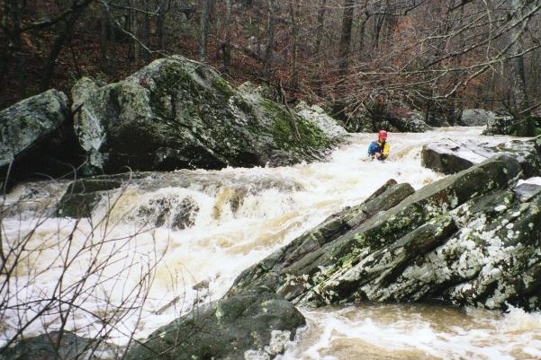

| Chris Sherrod heads for the boof left, the start of the first significant rapid at about mile 2 (photo courtesy Sloan Bryan) | |
| Dave Branham paddles a typical rapid on Blackoak | |
| A mildly action packed spot |
|  | More typical Blackoak good stuff |
| Chris Sherrod goes for the left slot at the triple slot. This maneuver used to be somewhat unwise, but is now the way since that log on river left has shifted a few feet donstream (photo courtesy Sloan Bryan) | |
| The bottom drop of the hardest rapid towards the end of the run (photo courtesy Sloan Bryan) |